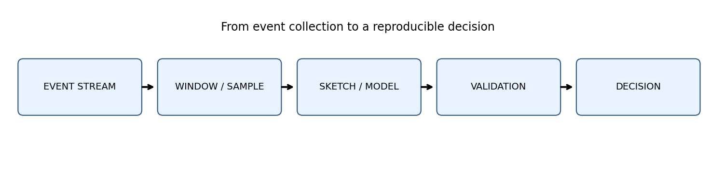
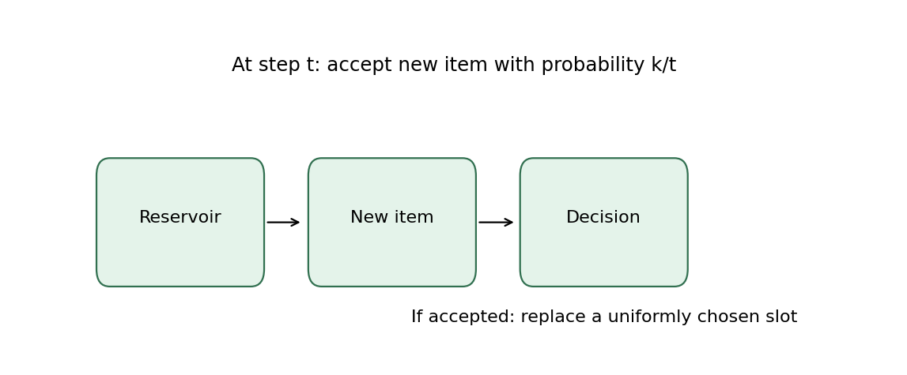
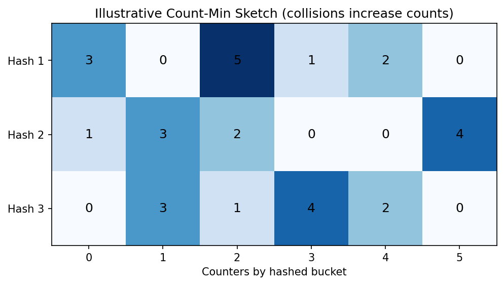
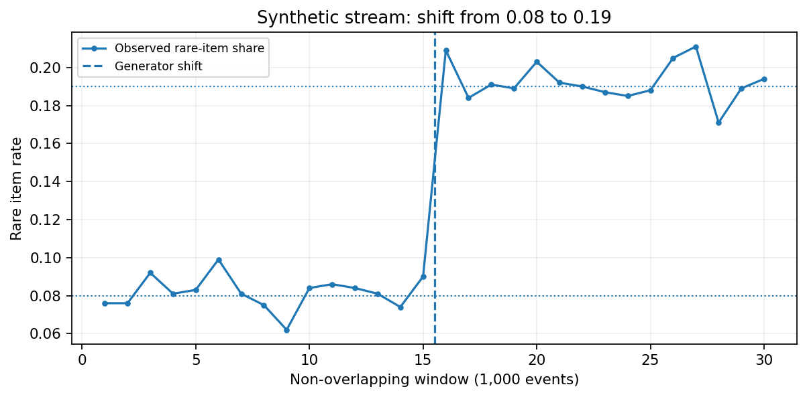

فصل دوازدهم — دادهکاوی در مقیاس واقعی: جریان داده، تقریب، توزیع و دادههای پیچیده#
فصل پایانی درس دادهکاوی — کارشناسی ارشد مهندسی کامپیوتر
این فصل مهارت «انتخاب الگوریتم متناسب با محدودیتهای واقعی» را به مفاهیم یازده فصل قبل متصل میکند. موضوع اصلی، افزایش صرفِ اندازهٔ داده نیست؛ موضوع این است که آیا الگوی کشفشده، با بودجهٔ زمان، حافظه، ارتباطات و خطای مجاز، همچنان معتبر و قابل بازتولید است؟
فایلهای دریافت: PDF فارسی فصل · سورس XeLaTeX و PDF · کد اجرایی · دفترچهٔ Jupyter · نتایج آزمون.
۱۲ـ۱. مسئلهٔ محوری: فروشگاه آنلاین با جریان رویداد#
فرض کنید سامانهای در هر ثانیه هزار رویداد خرید، مشاهدهٔ کالا یا جستوجو ثبت میکند. مدیر سامانه میخواهد در پنجرهٔ دهدقیقهای بداند کدام محصولات پرتکرارند، چه تغییر ناگهانی در الگوی خرید رخ داده و آیا یک کاربر یا کالا قبلاً دیده شده است. ثبت یک روز در این نرخ برابر ۸۶٬۴۰۰٬۰۰۰ رویداد است. اگر هر رخداد، بدون سربار پایگاه داده، ۱۰۰ بایت باشد، فقط دادهٔ خام یک روز تقریباً ۸٫۶۴ گیگابایت خواهد شد. نگهداری همیشگی همهٔ رویدادها در حافظه، پیشفرض قابل دفاعی نیست.
سه پرسش از آغاز باید جدا شوند: (۱) چه کمیتی میخواهیم؟ شمارش دقیق، فراوانی نسبی، عضویت یا دستهبندی؟ (۲) چه خطایی مجاز است؟ خطای شمارش، خطای تصمیم، مثبت کاذب یا تأخیر؟ (۳) چه منبعی محدود است؟ حافظهٔ RAM، پردازنده، پهنای باند، یا زمان پاسخ؟ جواب این سه پرسش انتخاب روش را تعیین میکند.


Fig. 190 چرخهٔ نمونهٔ فصل: دریافت جریان، خلاصهسازی، کشف و اعتبارسنجی؛ دادهٔ اصلی و دادهٔ آزمون مستقل میمانند.#
این مثال تا انتهای فصل ادامه دارد. دادههای آزمایشگاهی همراه فصل ساختگی هستند و برای اثبات توانایی یک سامانهٔ صنعتی کافی نیستند؛ مزیت آنها آن است که نتیجه با بذر تصادفی ثابت تکرارپذیر است.
۱۲ـ۲. بودجهٔ محاسباتی: زمان، حافظه و کیفیت#
اگر تعداد رخدادها \(n\) و تعداد ویژگیها \(d\) باشد، پیمایش تکگذر هزینهٔ زمانی \(O(n)\) دارد؛ اما نگهداری تمامی بردارها ممکن است \(O(nd)\) حافظه بخواهد. یک الگوریتم را نمیتوان فقط با \(O(\cdot)\) توصیف کرد: هزینهٔ ورودی/خروجی، ارتباط شبکه، ظرفیت پایگاه داده، سربار ساختارهای شیء و حساسیت به توزیع ورودی نیز مهماند.
برای تحلیل عملی، به جای یک عدد، بردار هزینه را میسنجیم:
که \(T_A\) زمان پردازش، \(M_A\) بیشینهٔ حافظه، \(B_A\) حجم ارتباطات، \(L_A\) تأخیر پاسخ و \(E_A\) خطا است. راهکاری که سریعتر ولی دارای خطای کنترلنشده باشد الزاماً بهتر نیست. «بهینه» فقط در نسبت با قیود مسئله معنی دارد.
مثال دستی. شمارش دقیق ۱۰۰۰ کلید یکتا با نگهداری جفتِ کلید/شمارنده ممکن است کمهزینه باشد، حتی برای میلیونها رخداد. اما شمارش میلیونها کلید متفاوت مسئلهٔ دیگری است: حافظه تابع تعداد کلیدهای یکتا \(U\) است، نه فقط طول جریان \(n\). پیش از انتخاب Sketch باید \(U\) را تخمین زد.
تمرین سنجش هزینه#
دو پیادهسازی را با داده و سختافزار یکسان اجرا کنید، پیش از آزمون فرآیند را گرم کنید، چند تکرار مستقل انجام دهید و میانه و دامنهٔ تغییرات را گزارش کنید. زمان «ساخت داده» را از زمان «پردازش» جدا نگه دارید. مقایسهٔ حافظه باید با ابزار یکسان و تعریف روشن انجام گیرد.
۱۲ـ۳. پردازش دستهای، جریانی و پنجرهها#
در پردازش دستهای (Batch) مجموعهٔ داده از ابتدا معلوم است؛ میتوان آن را چندبار پیمود، مرتب کرد و خروجی دقیق ساخت. در جریان (Stream) رویدادها پیوسته میرسند و ممکن است بازخوانی همهٔ گذشته ممکن نباشد. الگوریتم جریانی غالباً وضعیت کوچکی را با هر رخداد بهروز میکند:
برای تحلیل روند، پنجرهٔ زمانی تعریف میشود: پنجرهٔ غلتان (sliding) همواره آخرین \(W\) رخداد یا مدت را میبیند؛ پنجرهٔ ثابت (tumbling) بازههای غیرهمپوشان میسازد. زمان رویداد با زمان دریافت متفاوت است؛ تأخیر شبکه ممکن است رخداد قدیمی را پس از بستهشدن پنجره برساند. سیاست مدیریت رخداد دیررس باید در تعریف مسئله بیاید.
در پنجرهٔ ۱۰ دقیقهای و نرخ ۱۰۰۰ رخداد/ثانیه، حدود ۶۰۰٬۰۰۰ رخداد در پنجره حضور دارند. اگر فقط مجموع تعداد خرید لازم باشد، وضعیت یک شمارنده کافی است؛ اما اگر رخدادهای خروجی از پنجرهٔ لغزان را بخواهیم کم کنیم، برای حذف دقیق آنها باید اطلاعات تکمیلی (صف، bucket یا نگهداری رکورد) داشته باشیم. «حافظهٔ ثابت» دربارهٔ همهٔ انواع پنجره خودبهخود برقرار نیست.
۱۲ـ۴. Reservoir Sampling: نمونهٔ یکنواخت بدون دانستن طول جریان#
مسئله: از جریانی با طول نامعلوم، دقیقاً \(k\) رکورد را طوری نگه داریم که پس از دریافت \(t\ge k\) رکورد، احتمال حضور هر رکورد در مخزن برابر \(k/t\) باشد.
الگوریتم R: ابتدا \(k\) عضو نخست را در مخزن قرار دهید. وقتی عضو شمارهٔ \(t>k\) رسید، عدد صحیح یکنواخت \(j\) از \(\{1,\ldots,t\}\) انتخاب کنید؛ اگر \(j\le k\) بود، خانهٔ \(j\) مخزن را با عضو جدید جایگزین کنید.
اثبات کوتاه. احتمال ورود عضو \(t\) برابر \(k/t\) است. یک عضو قدیمی که تا لحظهٔ \(t-1\) با احتمال \(k/(t-1)\) در مخزن بوده، در گام \(t\) با احتمال \(1-1/t\) باقی میماند، زیرا احتمال جایگزینشدن خانهٔ خاص او \(1/t\) است. پس
این استدلال به انتخاب تصادفی یکنواخت و نسخهٔ صحیح الگوریتم وابسته است. مخزن برای جریانهایی با وزن نمونهگیری یا تقدم زمانی به طور مستقیم نمونهٔ مطلوب را نمیدهد.
مثال دستی با \(k=2\). بعد از سه رکورد \(A,B,C\)، هر یک با احتمال \(2/3\) انتخاب شده است. برای رخداد چهارم \(D\)، احتمال ورود آن \(1/2\) است؛ احتمال بقای هر عضو قبلی برابر \((2/3)(3/4)=1/2\) میشود. بدین ترتیب هر عضو از چهار عضو حضور یکسان دارد.


Fig. 191 نمای شماتیک تصمیم جایگزینی عضو تازه در Reservoir Sampling.#
محدودیت: نمونهگیری درست، بهتنهایی تضمین نمیکند یک کلاس بسیار نادر در نمونه ظاهر شود. اگر احتمال رخداد نادر \(p\) باشد، احتمال ندیدن آن در \(k\) نمونهٔ مستقل تقریباً \((1-p)^k\) است. برای دادهٔ نامتوازن، نمونهگیری طبقهای یا طراحی دقیقتری لازم است.
۱۲ـ۵. خلاصهٔ شمارش تقریبی: Count-Min Sketch#
وقتی تعداد کلیدهای یکتا زیاد است، میتوان به جای ذخیرهٔ جدول کامل فراوانی، آرایهای با \(d\) سطر و \(w\) ستون ساخت. هر سطر تابع هش مستقلی دارد و رخداد مربوط به کلید \(a\) یک خانهٔ متناظر در هر سطر را افزایش میدهد:
تخمین فراوانی کلید برابر است با
با شمارندههای فقط افزایشی و هش مناسب، برخوردها به تخمین مقدار مثبت اضافی میدهند؛ بنابراین \(\widehat f(a)\ge f(a)\). برای پارامترهای تقریبی \(w=\lceil e/\varepsilon\rceil\) و \(d=\lceil\ln(1/\delta)\rceil\)، تحت فرضهای استاندارد هش، با احتمال حداقل \(1-\delta\) خطای افزوده حداکثر \(\varepsilon N\) است؛ \(N\) مجموع افزایشهاست. این کران احتمالاتی است، نه تضمین خطای صفر در یک اجرای مشخص.
مثال دستی. اگر دو کلید \(A,B\) به یک ستون از سطر اول برخورد کنند و فراوانیهای واقعی آنها به ترتیب ۳ و ۲ باشد، آن خانه مقدار ۵ میگیرد. در سطر دوم ممکن است برخورد رخ ندهد و مقدار خانهٔ \(A\) برابر ۳ باشد؛ عملگر کمینه برای \(A\) مقدار ۳ را برمیگرداند. بدون تعدد هشها، جداکردن اثر برخورد ناممکن است.


Fig. 192 مثال آموزشی از برخورد هش در یک سطر و کاهش خطای تخمین با سطرهای مستقل.#
هشدار: کمیت خطای فوق به شمارش درجها وابسته است و حذف دلخواه، شمارندههای منفی یا وزنهای منفی میتواند مفروضات نسخهٔ ساده را نقض کند. کد این فصل، نسخهٔ آموزشی شمارشهای غیرمنفی را پیادهسازی کرده است.
۱۲ـ۶. آزمون عضویت احتمالی: Bloom Filter#
پرسش Bloom Filter از نوع شمارش نیست: «آیا این شناسه احتمالاً پیشتر دیده شده است؟» ساختار یک آرایهٔ \(m\) بیتی با \(k\) تابع هش دارد. با درج کلید، \(k\) بیت تنظیم میشوند. هنگام پرسوجو اگر حتی یک بیت صفر باشد، کلید قطعاً (در مدل بدون حذف) درج نشده است؛ اگر همه یک باشند، ممکن است برخورد کلیدهای دیگر موجب مثبت کاذب شده باشد.
پس از درج \(n\) کلید و با مفروضات تقریبی هش مستقل و یکنواخت، احتمال مثبت کاذب نزدیک است به
مقدار تقریباً بهینهٔ تعداد هشها \(k\approx(m/n)\ln 2\) است. در نسخهٔ استاندارد بدون حذف، منفی کاذب رخ نمیدهد؛ اما اگر داده یا فیلتر ناسازگار، خراب یا حذف شود چنین تضمینی برقرار نمیماند.
مثال محاسباتی. برای \(m=9600\) بیت و \(n=1000\) کلید، \(k\approx 9600\ln2/1000=6.65\) و انتخاب ۷ تابع هش معقول است. حدود ۱٫۲ کیلوبایت بیتِ خام برای نمایش عضویت تقریبی کافی است؛ سربار پیادهسازی جداگانه حساب میشود. Bloom جایگزین پایگاه دادهٔ تراکنش نیست، زیرا نمیتواند عناصر را بازیابی کند.
۱۲ـ۷. توزیع داده و تجمیع درست#
وقتی چند ماشین، جریان را پردازش میکنند، شکستن داده و سپس تجمیع خروجی باید با ماهیت آماره سازگار باشد. برای شمارش دقیق، تجمیع مجموع شمارشهای محلی است:
برای Count-Min Sketch، اگر اندازهها و خانوادهٔ هش یکسان باشند، میتوان خانهبهخانه آرایهها را جمع کرد و Sketch ادغامشده ساخت. اما نمونههای Reservoir مستقلِ نابرابر را نمیتوان بیملاحظه به هم چسباند: هر جزء باید با وزن متناسب با تعداد رخدادهای منبع وارد نمونهٔ کل شود.
مورد خطای رایج: میانگین نرخ خطای دو سرور که یکی ۱۰۰ و دیگری ۱۰۰٬۰۰۰ رکورد دارد، نباید با میانگین سادهٔ دو نرخ محاسبه شود. باید تعداد رخدادها را در وزندهی لحاظ کرد. در MapReduce، مسئلهٔ کلیدهای بسیار پرتکرار (skew) میتواند یک reducer را به گلوگاه تبدیل کند، حتی وقتی داده بهظاهر متوازن تقسیم شده باشد.
نکتهٔ سامانهای: در یک پردازش توزیعشده، حداقلیکبار تحویل پیام ممکن است شمارش را تکراری کند. شناسهٔ رخداد، ثبت وضعیت پایدار، checkpoint و سیاست بازپخش باید با معنای محاسبه سازگار شوند. عبارت «دقیق» بدون مدل شکست و تکرار پیام ناقص است.
۱۲ـ۸. خوشهبندی مقیاسپذیر و بازنمایی دادههای پیچیده#
روش BIRCH در کتاب Tan (§۸٫۵٫۲) و Han (§۸٫۳٫۴) در زمینهٔ خوشهبندی مقیاسپذیر بررسی میشود. ایدهٔ مرکزی BIRCH آن است که به جای نگهداری تمام نقاط در خوشهسازی اولیه، خلاصههایی از زیربخشهای داده نگه داریم. یک ویژگی خوشه یا Clustering Feature معمولاً به صورت سهتایی تعریف میشود:
از این خلاصه، مرکز خوشه \(\mu=LS/N\) و مجموع مربع فاصله تا مرکز برابر \(SS-\|LS\|^2/N\) به دست میآید. دو خلاصهٔ مربوط به مجموعههای مجزا نیز با جمع مؤلفهها ادغام میشوند. این ویژگی برای دادهٔ برداری عددی مناسب است؛ تعمیم بیتأمل آن به توالیهای DNA یا گرافها درست نیست.
مثال دستی. برای نقاط یکبعدی \(2,4,6\) داریم \(N=3\)، \(LS=12\) و \(SS=56\). مرکز \(4\) و مجموع مربعات انحراف \(56-12^2/3=8\) است. این خلاصه بخشی از اطلاعات نقطهای را حذف میکند؛ از آن نمیتوان ترتیب ورود یا همهٔ نقاط را بازسازی کرد.
در دادهٔ متنی ممکن است بردار شمارش واژگان یا embedding ساخته شود؛ در دادهٔ زمانی، ترتیب و وابستگی بین مشاهدات اهمیت دارد؛ در گراف، ساختار یالها و نوع رابطه ضروری است. هر بار که دادهٔ غیرجدولی به بردار تبدیل میشود، باید روشن کرد چه اطلاعاتی حذف میشود و سنجهٔ شباهت مناسب چیست. کتاب Tan (§۲٫۱٫۲) گونههای رکوردی، گرافی و مرتبشده را تفکیک میکند.
۱۲ـ۹. تغییر توزیع و ارزیابی برخط#
مدلی که دیروز مناسب بوده است شاید امروز مناسب نباشد. تغییر توزیع به جابهجایی \(P_t(X,Y)\) در طول زمان اشاره دارد؛ concept drift در معنای دقیقتر معمولاً به تغییر رابطهٔ هدف با ویژگیها، مانند \(P_t(Y\mid X)\)، مربوط میشود. افزایش فراوانی یک محصول لزوماً concept drift در طبقهبندی نیست؛ ممکن است صرفاً تغییر فراوانی ورودی یا روند فصلی باشد.
در ارزیابی prequential یا «آزمون سپس آموزش»، هر رخداد برچسبدار ابتدا با مدل جاری پیشبینی میشود و سپس، در صورت مجاز بودن، به بهروزرسانی آن کمک میکند. این ترتیب از نشت آینده به گذشته جلوگیری میکند. در عمل ممکن است برچسب با تأخیر برسد، پس سنجهٔ ارزیابی باید زمانِ دسترسبودن برچسب را نیز لحاظ کند.
در دادهٔ ساختگی همراه فصل، احتمال رخداد کالای rare در نیمهٔ اول جریان ۰٫۰۸ و در نیمهٔ دوم ۰٫۱۹ است. این تغییر از پیش اعمالشده در مولد است؛ مشاهدهٔ روند در نمودار، اثبات یک آشکارساز drift روی دادهٔ واقعی نیست.


Fig. 193 فراوانی تجربی یک کالای ساختگی در پنجرههای متوالی؛ تغییر فرضشده در میانهٔ جریان رخ میدهد.#
برای قضاوت آماری دربارهٔ تغییر، باید فرض صفر، نرخ هشدار کاذب، تعدد پنجرهها، همبستگی زمانی و سیاست بازآموزی روشن شوند؛ این همان پلی است که فصل یازدهم به فصل حاضر میسازد.
۱۲ـ۱۰. انتخاب معماری و بازتولیدپذیری#
نیاز اصلی |
گزینهٔ اولیه |
پرسش پیش از استفاده |
|---|---|---|
فراوانی دقیق کلیدها |
|
تعداد کلیدهای یکتا و حافظه کافی است؟ |
فراوانی تقریبی |
Count-Min Sketch |
خطای یکطرفه و برخورد هش قابل قبول است؟ |
نمونهٔ یکنواخت از جریان |
Reservoir Sampling |
نمونهٔ کلاسهای نادر کافی است؟ |
عضویت سریع تقریبی |
Bloom Filter |
مثبت کاذب چه هزینهای دارد؟ |
خوشهبندی بزرگ برداری |
BIRCH |
خلاصهٔ برداری ویژگیهای ضروری را حفظ میکند؟ |
پردازش چندگرهی |
MapReduce / تجمع توزیعشده |
skew، تکرار پیام و سربار ارتباط مدیریت شدهاند؟ |
قبل از انتشار نتیجهٔ علمی باید بذر تصادفی، نسخهٔ داده، شیوهٔ تقسیم آموزش/آزمون، تنظیمات هش و پارامترها، نسخهٔ کد و وابستگیها، تعریف سنجهها و محیط اجرا ثبت شوند. صرف وجود فایل Notebook، نتیجه را بازتولیدپذیر نمیکند؛ Notebook باید از ابتدا و در محیط پاک اجرا شود.
اجرای آزمایش همراه فصل#
کد همراه تنها به کتابخانهٔ استاندارد Python نیاز دارد. در پوشهٔ downloads اجرا کنید:
python chapter12_examples.py
ابتدا SELF_TEST_OK چاپ میشود؛ سپس نتایج شمارش دقیق، تخمینی، Reservoir و آزمون Bloom گزارش میشوند. این کد برای فهم مفاهیم است و ادعای پیادهسازی بهینهٔ صنعتی ندارد. هشهای مثال از BLAKE2b با seedهای مستقل ظاهری ساخته شدهاند؛ استقلال آماری کامل توابع هش از این روش اثبات نمیشود و کران نظری Sketch را نباید صرفاً با آن تضمینشده دانست.
۱۲ـ۱۱. پروژهٔ جامع پایانی#
یک جریان رویداد با حداقل ۱۰۰٬۰۰۰ رخداد و یک تغییر توزیع قابل کنترل تولید کنید. سه تحلیل انجام دهید: (۱) شمارش دقیق و تقریبی فراوانیها با برآورد خطای مثبت Sketch؛ (۲) بررسی کیفیت نمونهٔ Reservoir برای دستههای پرتکرار و نادر؛ (۳) تشخیص جابهجایی روند با پنجرههای مختلف. آزمایش را حداقل در پنج بذر مستقل تکرار و نمودار پراکندگی نتایج ارائه کنید.
تحویل دانشجو: صورت مسئله، تعریف دقیق متغیرها، کد و Notebook قابل اجرا، نمودار زمان و حافظه، خطا برحسب پارامترهای Sketch، تحلیل عدم قطعیت و هشدارهای آماری، و یک تصمیم مهندسی مستند. کسب خطای کوچک روی یک بذر، بهتنهایی دلیل کافی برای انتخاب روش نیست.
پرسشهای تحلیل: اگر محصول نادر اهمیت اقتصادی زیادی داشته باشد، چه تغییری در روش نمونهگیری میدهید؟ اگر رویدادها تکراری به مقصد برسند، چه اتفاقی برای شمارش و Sketch رخ میدهد؟ اگر هدف برآورد تعداد اعضای متمایز باشد، چرا Bloom Filter جواب عددی مستقیم نمیدهد؟
۱۲ـ۱۲. جمعبندی فصل و پیوند با درس#
در فصلهای نخست، داده را تعریف و آماده کردیم؛ سپس شباهت، الگو، طبقهبندی، خوشه، ناهنجاری و اعتبار آماری را آموختیم. اکنون میدانیم یک راهحل قابل اتکا، فقط «الگوریتم درست» نیست: به بازنمایی معنادار، محدودیت منابع، خطای کنترلشده، ارزیابی معتبر، و ثبت مسیر بازتولید نیاز دارد. فصل دوازدهم پایان برنامهٔ ۱۲فصلی فعلی است؛ مسیر پژوهش پس از آن با پروژههای عمیقتر ادامه پیدا میکند، نه با افزودن فصل سیزدهم بدون مصوبهٔ آموزشی.
منابع و دامنهٔ انتساب#
Han, J., Pei, J., and Tong, H. Data Mining: Concepts and Techniques, 4th ed., Elsevier, 2023. موضوعات مرتبط: §۵٫۴٫۲، §۷٫۶٫۱ و §۸٫۳٫۴؛ شمارهٔ دقیق صفحه باید با نسخهٔ چاپی تحویلشده کنترل شود.
Tan, P.-N., Steinbach, M., Karpatne, A., and Kumar, V. Introduction to Data Mining, 2nd ed., Pearson, 2019. §۲٫۱٫۲ (انواع داده) و §۸٫۵ (مقیاسپذیری خوشهبندی)، بهویژه §۸٫۵٫۲ (BIRCH)، صفحات چاپی ۶۸۱–۶۸۹.
Vitter, J. S. (1985). Random Sampling with a Reservoir. ACM Transactions on Mathematical Software, 11(1), 37–57.
Cormode, G. and Muthukrishnan, S. (2005). An Improved Data Stream Summary: The Count-Min Sketch and Its Applications. Journal of Algorithms, 55(1), 58–75.
Bloom, B. H. (1970). Space/Time Trade-offs in Hash Coding with Allowable Errors. Communications of the ACM, 13(7), 422–426.
شفافسازی: Reservoir، Count-Min Sketch و Bloom Filter مکملهای آموزشیاند؛ انتساب مستقیم فرمولهای این بخشها به صفحات مشخص کتاب Tan/Han انجام نشده است. دادهها، نمودارها و پیادهسازیهای این فصل مستقل و آموزشیاند.